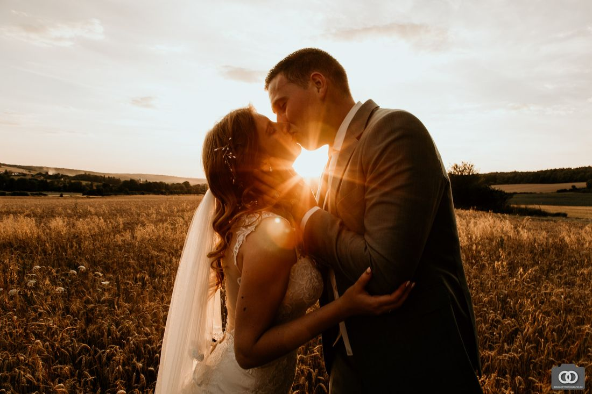
Meest gekozenFoto + video
De trouwfotograaf die tegelijk ook filmt. Alle foto's plus een complete trouwfilm, zonder kosten voor een aparte videograaf.
Vanaf € 1995Meer info
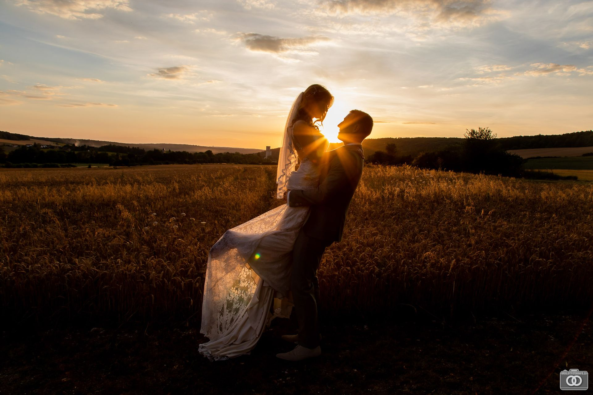
Ik leg jullie trouwdag vast op foto én film, rustig en bijna onzichtbaar. Al meer dan 400 bruiloften, in Nederland en ver daarbuiten.
Hij zag alles en speelde overal op in en zijn aanwezigheid hinderde of stoorde echt totaal niet!Stephanie en Kevin · 9,8 uit 49 ervaringen op ThePerfectWedding
Waarom twee partijen boeken als het ook samen kan? Ik fotografeer en film tegelijk. Zo hebben jullie één vast aanspreekpunt, van het eerste contact tot het aanleveren, en krijgen jullie het complete verhaal van jullie dag.
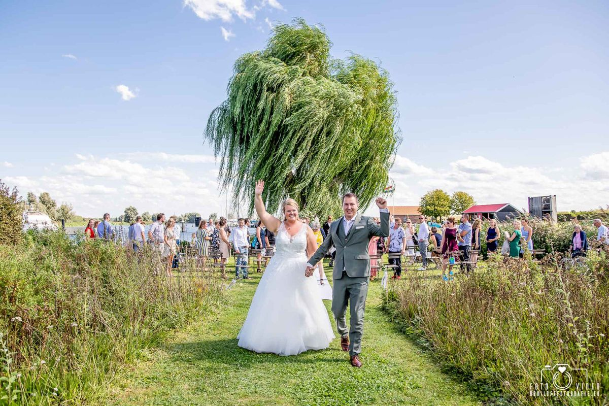
Eerlijke prijzen zonder verrassingen achteraf. Alles inclusief btw en reiskosten in Nederland en België. Andere uren kunnen ook.

Meest gekozenDe trouwfotograaf die tegelijk ook filmt. Alle foto's plus een complete trouwfilm, zonder kosten voor een aparte videograaf.
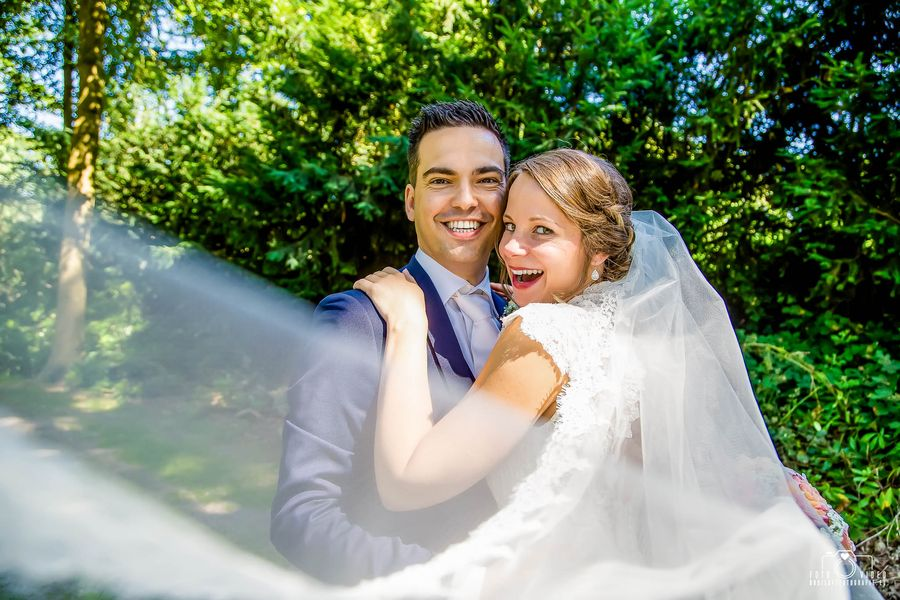
Van de voorbereiding in de ochtend tot de openingsdans. Onbeperkt foto's, allemaal bewerkt en zonder watermerk.
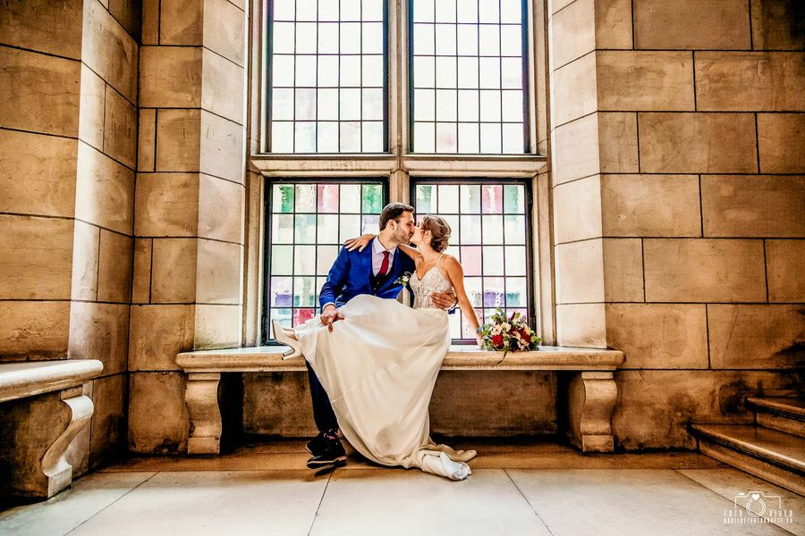
Een Nederlandse fotograaf mee naar Frankrijk, Italië of Ibiza. Geen taalbarrière, en minder duur dan jullie denken.
Boeken jullie een all-inclusive pakket? Dan krijgen jullie 50% korting op de loveshoot.
Niet alleen de grote momenten, juist ook de kleine. Een greep uit echte bruiloften.
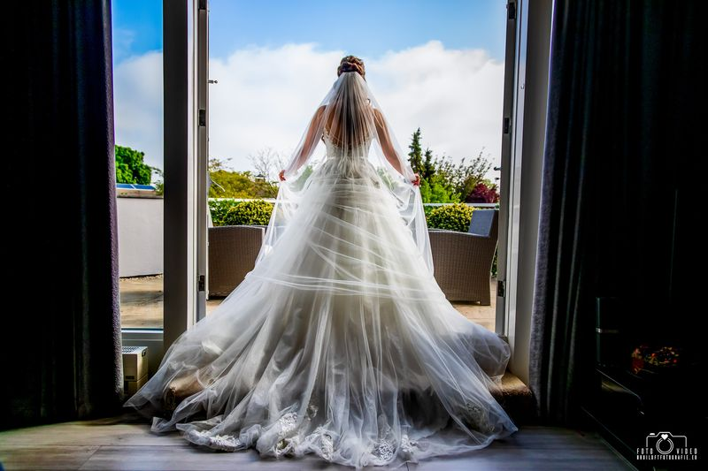
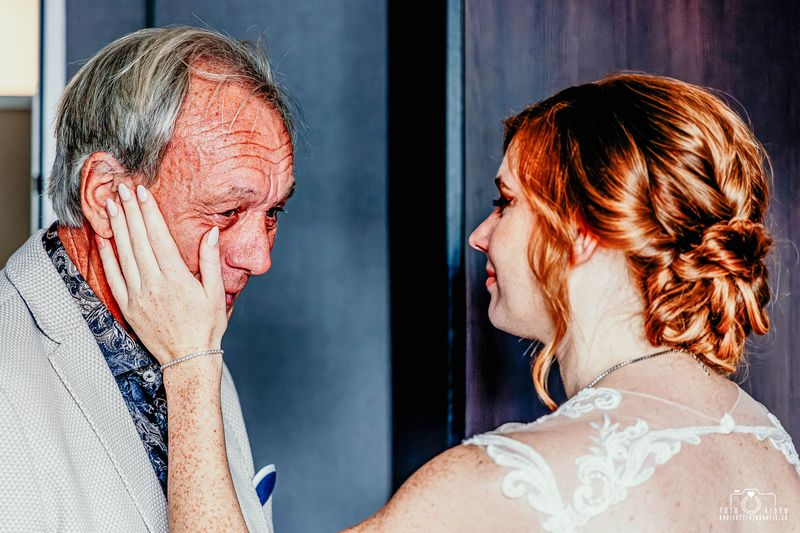
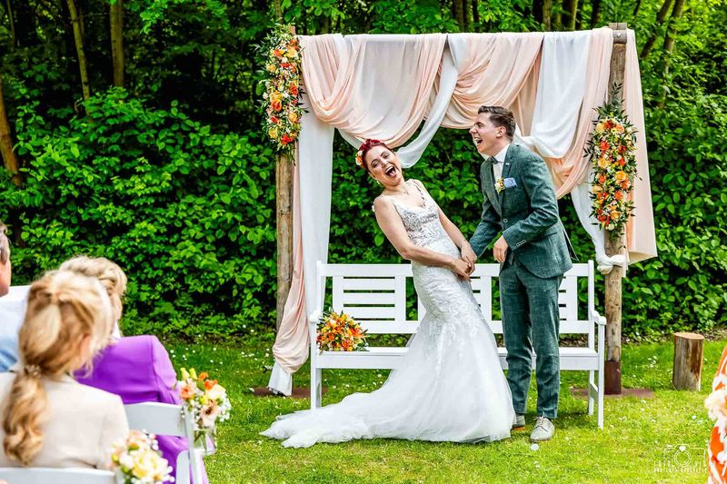
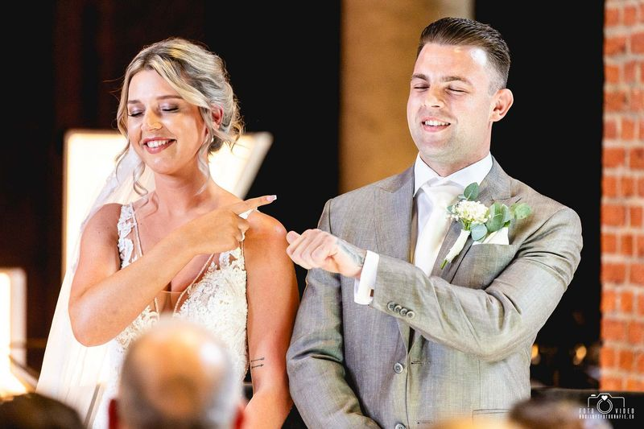
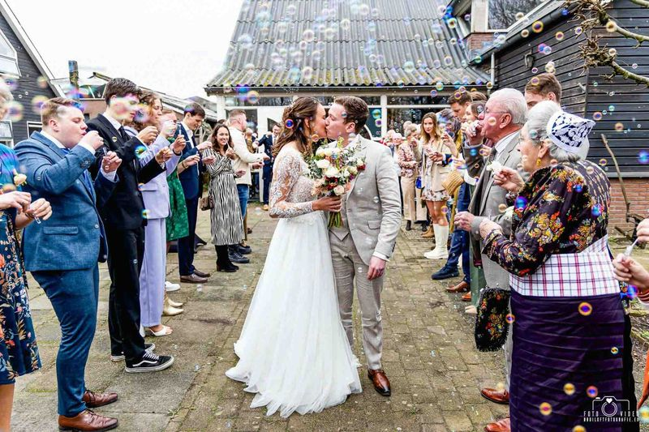
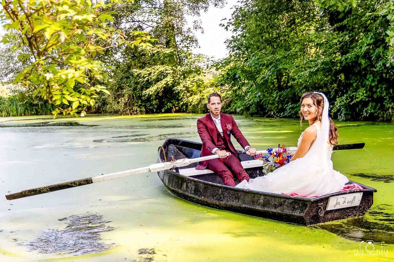
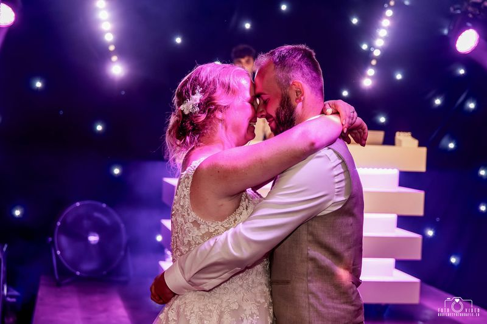
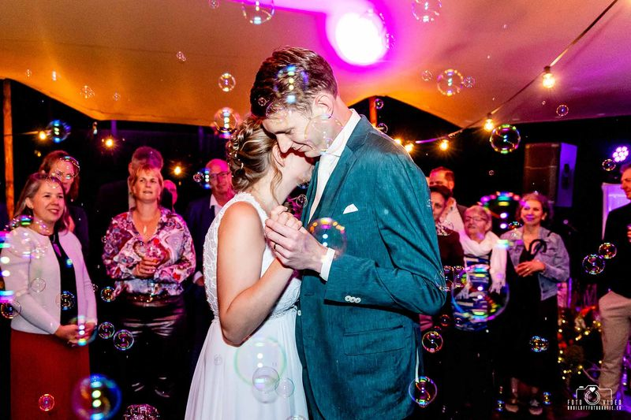
Kleurrijk of zwart-wit, spontaan en met oog voor emotie. Bekijk ook de trouwfilms op YouTube.
Trouwfilms bekijkenIk denk graag met jullie mee, ook over planning, locatie en logistiek.
Online, telefonisch of bij jullie thuis (binnen 25 km van Roosendaal). We nemen jullie wensen en de planning door.
Uiterlijk twee weken voor de bruiloft spreken we alles nog een keer door. Tussendoor kunnen jullie me altijd bereiken met vragen.
Vaak krijgen jullie dezelfde avond al een paar foto's. Alle foto's en de film volgen binnen 6 tot 10 weken in een luxe USB-pakket.
Populaire trouwdata raken snel vol. Voor de laatste maanden van 2026 zijn er ook nog een paar plekken. Stuur gerust een berichtje met jullie datum.
Een greep uit de recensies op The Perfect Wedding, Zankyou, Google en Facebook.
“1 woord: fantastisch! Wat heb je onze dag mooi vastgelegd! 'S avonds de eerste foto's al in onze mail en wat waren die al super mooi. Na een paar weken (netjes zoals afgesproken) alle foto's en onze video mogen ontvangen. Wauw wat zijn ze allemaal super mooi geworden. Van iedereen krijgen we complimenten over de mooie foto's. De video neemt ons echt mee terug naar onze fantastische dag. Je bent een topper!!!”
Rob en Carolien“Robin heeft al onze verwachtingen overtroffen. Van een fijne kennismaking tot een geweldig mooi pakketje in de brievenbus. De flexibiliteit op onze trouwdag, het meedenken en het uitlopen van onze uren niets was hem te gek. Het volledig kunnen herbeleven van onze trouwdag door middel van de foto’s is fantastisch. Nogmaals bedankt Robin, wij raden je zeker aan.”
Obed en Shundell“Robin heeft ons zowel voor de bruiloft als tijdens de grote dag zelf ontzettend fijn begeleid. Niet alleen over dingen die betrekking hebben tot de fotografie zelf, maar ook over andere zaken kon hij ons goed adviseren! Zijn relaxte houding en het meedenken in onze wensen maakten de dag extra speciaal. We vonden het super dat hij onze dag heeft vastgelegd!”
Nadine en Erik“Wij hebben echt een topdag gehad mede dankzij deze topfotograaf! We voelde ons direct op ons gemak bij Robin (wat voor ons heel belangrijk was) en ondanks dat het weer behoorlijk tegenviel hebben we echt prachtige foto's gekregen waar we nog heel lang van na gaan genieten! Enorm bedankt dat je onze fotograaf wilde zijn op deze bijzondere dag!”
Chantal“Wij zijn erg blij met de foto's van onze bruiloft op 25 september 2021. Mooie en kleurrijke foto's, precies de goede momenten vastgelegd en een uitgebreide selectie aan foto's! Robin is een relaxte fotograaf en prettig om mee te werken. Goede prijs-kwaliteit verhouding. Aanrader!”
Nicoline en Maarten“Het was alsof je ons al jaren kenden en de dag zelf hebben we jou amper opgemerkt! Je bent een super toffe man! Zo aardig, vriendelijk en meedenkend. We voelden ons meteen op ons gemak! En dan de prachtige fotos en videos nadien! Wauw! Het was alsof we opnieuw de dag aan het vieren waren!”
Familie Havermans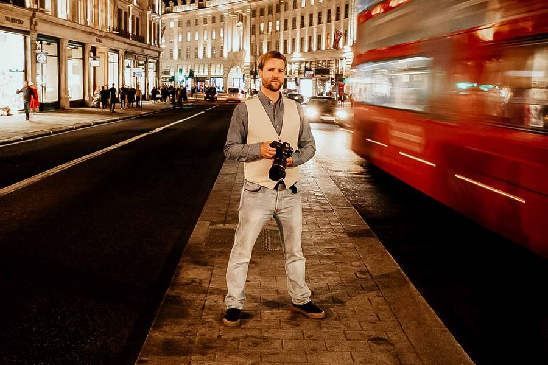
Ik werk sinds 2002 als fotograaf en begon als concertfotograaf, voor artiesten als Muse, Imagine Dragons en Linkin Park. Daarna werkte ik lang als documentair fotograaf voor kranten en tijdschriften. Daardoor weet ik precies hoe ik moet inspelen op emotie, licht en snel veranderende situaties.
Op een bruiloft werk ik zo onzichtbaar mogelijk, want jullie zijn het middelpunt. Ik zoek alle foto's zelf uit en bewerk ze ook allemaal zelf, net als de film. Ik ben nou eenmaal een pietje precies.
Wat leuk dat jullie gaan trouwen! Laat jullie datum en wensen achter, dan hoor je meestal binnen een dag van me.
Bel of app me met jullie trouwdatum en het pakket waar jullie interesse in hebben.